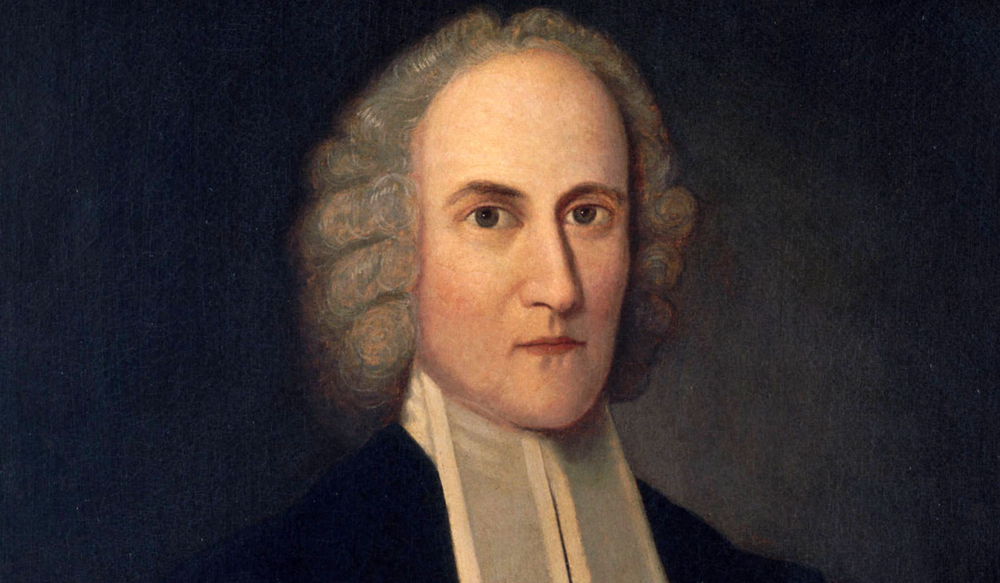

Reevaluating Jonathan Edwards’s Compatibilism in Light of Adam’s First Sin
June 2, 2025

This was a final paper for a class on the problem of evil taught by Dr. Stephen Wellum at SBTS.
The question of how Adam could have sinned in his uncorrupted, prelapsarian state is a notoriously difficult one. Those who suggest that Adam sinned because of Satan only push the problem back one step further: how could evil have originated in the angelic realm, which was likewise created perfectly good? Berkhof writes, “It is impossible for us to say how temptation could find a point of contact in a holy person. And it is still more difficult to explain the origin of sin in the angelic world.” [
1] Many have suggested that finding an efficient cause of the first sin is impossible, citing Augustine: “To seek to discover the causes of these defections,—causes, as I have said, not efficient, but deficient,—is as if some one sought to see darkness, or hear silence.” [
2]
Naturally, this question of how Adam sinned also has implications for our understanding of the relationship between divine sovereignty and human free will. Assuming that God sovereignly ordains all things that take place, how can we locate the cause of the entrance of evil into a world that was totally good without making God morally responsible for evil? In understanding the relationship between divine sovereignty and human responsibility, many today turn to Jonathan Edwards’s formulation of compatibilism: “It is that motive, which, as it stands in view of the mind, is the strongest, that determines the will.” [
3] But what sin-inducing motive could there have been in the mind of the prelapsarian human couple created perfectly good? In this paper, I will argue that Edwards’s deterministic understanding of the human will fails to account for Adam’s first sin. Following Richard Muller’s thesis that Edwards’s formulation represents a departure from the traditional Reformed view, I will argue that the traditional Reformed view of human freedom better accounts for Adam’s first sin because it allows for genuine contingency in human choices within the sovereign decree of God.
A Brief Survey
Many theologians have addressed the problem of the origin of evil. Before evaluating Edwards’s compatibilism as it relates to this problem, it is helpful to see what other Reformed theologians have said about this issue.
Turretin writes that Adam’s mutability and liberty was a condition that led to his sin [
4], but that “the proximate and proper cause of sin . . . is to be sought nowhere else than in the free will of man.” [
5] Dabney thinks that Turretin’s answer is insufficient: “Nor is it any solution to say with Turretin, the proper cause was a free will perverted voluntarily. Truly; but how came a right will to pervert itself while yet right?” He goes on to pose the question: “If the evil dispositions of a fallen sinner so determine his volitions as to ensure that he will not choose spiritual good, why did not the holy dispositions of Adam and Satan ensure that they would never have a volition spiritually evil?” His answer is essentially that the holy state of Adam and Satan does not exclude the possibility of sin, because sin is privative by nature. “While the positive requires a positive cause, it is not therefore inferable that the negative equally demands a positive cause. To make a candle burn, it must be lighted; to make it go out, it need only be let alone.” Having shown the possibility of sin, Dabney then gives the “most probable account” of how it happened: “An object [the fruit] was apprehended as in its mere nature desirable; not yet as unlawful. So far there is no sin. But as the soul, finite and fallible in its attention, permitted an overweening apprehension and desire of its natural adaptation to confer pleasure, to override the feeling of its unlawfulness, concupiscence was developed.” In other words, Adam and Eve sinned because their will allowed the desire for the fruit to supersede the desire for obedience, and this “permission” of the will is privative in its nature, not
causing the sin but fallibly allowing it to occur. [
6]
In his systematic theology, Shedd has an extended treatment of Adam’s first sin. He dismisses the ideas that Adam’s first sin had any origination in either the understanding, led astray by Satan, or the “sensuous nature of man”, or any “inward lust or sinful desire.” He concludes that Adam’s sin was uncaused and originated solely in the self-determination of his will:
The fall of man cannot be rationalized, that is, explained on natural and rational grounds. This would require that it be accounted for not by pure self-determination but by the operation of the law of cause and effect. In the physical world, a fact can be explained and made to look rational by pointing to a foregoing cause for it that is different from the fact itself. But the fact of sin cannot be so explained and rationalized.
There was no prior act or sinful inclination of Adam by which to account for the fact of his apostasy. The sinful self-determination of Adam’s will was both the cause of the first sin and the first sin itself. Sin is self-caused and therefore cannot be an effect proper of a cause proper, because an effect is different from its cause. [
7]
Concerning the cause of Adam’s sin, Bavinck similarly writes:
The moral life is utterly unique; it is always a life of freedom and that, in the nature of the case, is a riddle. But this is even much more the case with a sinful act, specifically with the first sinful act. Sin cannot be physically or logically deduced from antecedent circumstances, reasonings, or considerations. Above all, it cannot be inferred from a holy nature created in God’s image.
One who understood and explained sin, that is, could demonstrate that it necessarily followed from antecedent factors, would fail to do justice to its nature, erase the boundaries between good and evil, and trace something evil to something good. . . . [Sin] does not have an origin in the true sense of the word, only a beginning. [
8]
This matter has also been addressed by a few modern theologians as well. In line with Shedd and Bavinck, Donald Macleod writes:
Adam’s choice was foreordained as a free act, not “caused” by any prior event or circumstance within the causal nexus (and, of course, the divine decree itself is not part of the causal nexus). He, himself, Adam, was the cause of his own decision, and had any third party been present as an intelligent observer they would have found it impossible to predict what choice Adam would make. [
9]
James Anderson makes an unusual proposal suggesting the possibility that Adam sinned as a result of a “weakness of will” (
akrasia), where he chose to act
against his better judgment. Anderson suggests that it is possible for a person to commit a weak-willed free action despite
not having a weak-willed character. [
10]
Jonathan Edwards, Compatibilism, and the First Sin
Reformed, Calvinistic theology has always sought to hold together two biblical truths: the meticulous sovereignty of God over all things and human responsibility for their actions. However, different theologians have resolved the tension between these two truths in different ways. Most notably, Jonathan Edwards reconciles the tension between divine sovereignty and human responsibility by arguing that a deterministic divine sovereignty is compatible with genuine human responsibility because the human will is
free (and thus responsible) so long as it acts according to its strongest motive. He writes, “It is that motive, which, as it stands in view of the mind, is the strongest, that determines the will.” [
11] Humans can be genuinely responsible for their actions because their moral responsibility is not determined by their ability to act to the contrary (contra libertarianism) but rather by the motives according to which they carried out their actions. Edwards distinguishes between
moral necessity, which is when actions are necessarily determined according to human motives, and
natural necessity, which is when actions are necessarily determined by natural causes. Humans are morally responsible when they act under moral necessity and not morally responsible when they act under natural necessity. [
12] Sam Storms thus summarizes Edwards’s view, especially as it relates to his deterministic understanding of sovereignty:
Foundational to Edwards’s theory is that
nothing comes to pass without a cause, including all acts of the will. The cause of an act of will is that motive which appears most agreeable to the mind. The will, therefore, is determined by or finds its cause and ground of existence in the strongest motive as perceived by the mind. The will, therefore, always is as the greatest apparent good is. The will is neither self-determined nor undetermined but always follows the last and prevailing dictate of the understanding.
The act of will is necessarily connected in a cause/effect relationship with the strongest motive as perceived by the mind and cannot but be as the motive is. This type of necessity is moral, lies within the will, and is one with it. It is a necessity wholly compatible with praise and/or blame. If, on the other hand, the will is acted upon by external factors contrary to its desires, the individual is exempted from responsibility. Freedom is simply the opportunity one has to act according to one’s will or in the pursuit of one’s desires. This notion of freedom, contends Edwards, is not only compatible with but absolutely essential to moral responsibility. [
13]
Borrowing from modern philosophical discourse, Edwards’s causally determined view of free will can be categorized under the term “compatibilism,” which has been adopted by many (if not most) Reformed theologians nowadays. In modern philosophical discussions, compatibilism is simply the thesis that human free will is
compatible with determinism. The question is, of course, how one defines “determinism.” All Reformed theologians agree that all events are determined by God’s decree. Where theologians differ is whether, as Edwards states, “nothing comes to pass without a cause” (this cause being something within the world-system [
14], not God’s decree).
The argument of this paper is that Edwards’s deterministic understanding of the human will fails to explain how Adam could have sinned in his paradisaical state. Edwards’s understanding of the freedom of the will—that the will is determined by its strongest motive—was developed to uphold his inherently deterministic understanding of divine sovereignty, such that all events are not only fully determined by the providence of God (the primary, remote cause) but also by situations and conditions that arise from creatures (secondary, proximate causes). However, if the will is determined by its strongest motive, then what motive could there have been that caused Adam to sin, assuming that he was created with a good and holy disposition without any lust for evil? If all things were created good, and all actions are sufficiently determined by antecedent motives or causes, then it appears impossible to explain how evil could have entered the world without making God the proximate cause of sin. Although there is undoubtedly great mystery when it comes to answering this question, the issue of Adam’s first sin clearly demonstrates, at least, the failure of Edwards’s understanding of the human will to fully explain the biblical data.
This has been pointed out by both Sam Storms in the previously cited article and Peter Beck in his article “The Fall of Man and the Failure of Jonathan Edwards.” [
15] Storms writes, “The only antecedent cause in Adam sufficient to a volitional effect is that upright and holy disposition with which he was endowed by God from the beginning of his existence. However, such a disposition could, by Edwards’s own admission, yield only such acts that partake of the quality of the cause (or motive) whence they proceed.
Thus Edwards’s scheme is capable only of explaining how Adam might continue to sin but not how he might begin to sin.” [
16] Beck concurs: “When it comes to the doctrine of the fall of man, Edwards painted himself into a corner. First, Jonathan Edwards failed to answer this question satisfactorily. Then, in his attempt to explain how a perfectly good Adam could choose the worst, Edwards failed to account adequately for his own theology of the will and did not recognize the insufficiency of the answer he provided.” [
17]
Interestingly, Beck appeals to Edwards’s own notion of “self-love” to explain Adam’s sin. He writes,
Along with the ability to choose freely, Adam was given the principles of God-love and self-love, both of which were good and proper, free of any evil. . . . However, in Genesis 3, God sovereignly permitted the circumstances to be changed; he denied Adam the pleasure and security of his presence. . . . Acting upon the principle of self-love, [Adam] had to choose between continued obedience to an unseen God and its incumbent blessings or the possibility of increasing his immediate pleasure by eating of the fruit that was then pleasant to the eyes and was, at that moment, the ‘greatest
apparent good’ (emphasis mine). . . . Thus, Adam succumbed not to deceit, nor feminine wiles, nor an inferior nature. Adam chose to disregard God’s command by responding to the urgings of his self-love and pursued what appeared to be in his immediate best interest. [
18]
Beck’s proposal is essentially that there was a disordering of Adam’s love, such that self-love overcame his love for God in the absence of God’s sustaining grace. However, Beck’s attempt to resolve this difficulty without casting away Edwards’s compatibilism does not hold water. Beck’s “self-love” seems to be no different than the sinful nature of humanity
subsequent to Adam’s sin. Edwards himself, writing about the state of Adam
after the first sin, says that
The inferior principles of self-love, and natural appetite, which were given only to serve, being alone, and left to themselves, of course became reigning principles; having no superior principles to regulate or control them, they became absolute masters of the heart. . . . Man immediately set up himself, and the objects of his private affections and appetites, as supreme; and so they took the place of god. [
19]
As Storms points out, “If total corruption of the heart
followed the initial transgression, and was therefore not its cause but its consequence, how did Adam sin?” Storms, despite being in favor of Edwards’s thesis, examines all of Edwards’s explanations for Adam’s sin and finds them all lacking. He concludes:
Adam, says Edwards, was created upright and thus from the moment of his first existence preferred what is good and righteous. . . . On the basis of what Edwards himself has said, the only way for Adam at present to prefer the opposite (i.e. evil) of what is at present preferred (i.e., good) is for God to directly alter or influence his present preference. To admit this, however, is to concede the objection that Edwards’s concept of causal determinism of the will makes God the author of sin.
In the final analysis, Storms is correct to say that “[Edwards’s] deterministic concept of human volition, if consistently applied, must trace every effect in the universe, and therefore every act of will, to the ultimate, all-sufficient, uncaused cause, the eternal Deity.” [
20] Storms does not have a way out of this conundrum, and this demonstrates a failure of Edwards’s project to hold divine sovereignty and human responsibility together by constructing a deterministic model of the human will, where the will is always sufficiently determined by its strongest motive.
A Parting of Ways in the Reformed Tradition?
In Richard Muller’s 2011 paper “Jonathan Edwards and the Absence of Free Choice: A Parting of Ways in the Reformed Tradition,” he argues that Edwards’s deterministic view of the human will was actually a “parting of ways” from the Reformed orthodoxy of the seventeenth century and that the deterministic Calvinism of today has its foundations in Edwards and not in the Reformed tradition:
The older tradition understood that there had to be a root indifference prior to the engagement of will and intellect, defined by the potency of the will to multiple effects and characterized by freedom of contradiction and contrariety, in order for there to be freedom of choice – Edwards’ formulation not only denies these points, it associates them with Arminianism. . . . The issue of Edwards’ heresy or orthodoxy is not one that a historian can answer, given the absence of any synodical decision on the matter and given the adoption of Edwardsian views by various orthodox Reformed or Calvinistic writers in the eighteenth and nineteenth centuries. What can be said from a historical perspective (and to my mind the far more important issue) is that
Edwards’ views are not consonant with the Reformed positions of the sixteenth and seventeenth centuries, whether one looks to Calvin or to Turretin or to the Westminster standards – and that, despite this lack of consonance, indeed, despite the acknowledged background of his thought in Hobbes and Locke, his views on the freedom of will were absorbed (I hesitate to say, hook, line, and sinker) by one branch of the Reformed tradition. [
21]
This thesis did not go unchallenged, generating some back and forth between Richard Muller and Paul Helm, with Helm arguing that Edwards’s compatibilism was in fact consistent with the older Reformed tradition. [
22] While the historical arguments of Muller and Helm are outside the scope of this paper, I believe that Muller’s understanding of the traditional Reformed view of human freedom succeeds where Edwards’s determinism fails—that is, in allowing for the possibility of Adam’s first sin. Muller writes,
Where Edwards categorically indicates not only that all events are caused, but also that all events are “necessarily connected with something foregoing” (by what we have seen to be a necessity of the consequent), the Reformed orthodox argue that some events are necessarily connected with something foregoing (by a necessity of the consequent) while other events are
contingently connected with something foregoing (by a necessity of the consequence). [
23]
Here, Muller makes a distinction between necessity of the consequent and necessity of the consequence. An event that occurs by necessity of the consequent is a metaphysical necessity that arises from some preceding cause, such that the event could not be otherwise. On the other hand, an event that occurs by necessity of the consequence is one that is logically necessary due to the divine decree and yet also contingent in nature, with the potential to have happened otherwise. Appealing to Turretin, his conclusion is that
Reformed orthodox theologians of the early modern era argued positive divine determination of events, full and certain divine foreknowledge of future contingency, but also freedom of will and free choice, grounded in multiple potencies of will and understood in terms of liberty of contradiction and contrariety. In a given moment, the past being unaltered, human beings have potencies to more than one effect and can do otherwise. . . . Where the Reformed orthodox and Edwards agree is that there is only one future course of events and that it is decreed by God; where they disagree, is how the world order arrives at that course of events. [
24]
To give a concrete example, suppose that person P is making a choice between option A and B and ultimately chooses A. Turretin and Edwards agree that, from the perspective of the divine decree and God’s primary causality, P’s choice of A is fully determined. Where they differ is at the level of secondary causality, looking exclusively at causes and effects within the world-system. Edwards’s understanding of divine determinism is such that God carries out his decree through the orchestration of a causal chain of events, such that every event has an antecedent cause that guarantees the occurrence of that event. P chooses A because he is most strongly inclined towards choosing A, and his inclination sufficiently determines his choice of A such that he could not have done otherwise. Turretin, on the other hand, would argue that the choice that P makes is contingent and not determined by any subsequent cause within the world-system. P had the potency to choose either A or B, and he ultimately chose A. If we placed P back into the same exact circumstances, it would have been possible for P to choose B, if not for God’s decree that P would choose A. To imagine it a different way, if a person Q was able to read the mind of P, then without knowing the plan of God, it would be impossible for Q to know with certainty what P would choose. Thus, human choices are
necessary when considering the whole picture, including God’s decree, but
contingent when considering only the world-system.
The distinction between these two views is subtle enough that one may find it impossible to adjudicate between the two, especially if one is merely concerned with biblical fidelity. Both views are consistent with the biblical truths of meticulous divine providence and genuine human responsibility. Muller himself, though arguing that Edwards’s view is not consistent with Reformed orthodoxy from a historical perspective, does not argue for its invalidity from a biblical or theological perspective. However, the case of Adam’s first sin is a clear instance in which the traditional Reformed view (as understood by Muller) is superior to Edwards’s determinism. The logic is clear: if every event is necessarily caused by some prior event or circumstance (as argued by Edwards), then the evil in this world must be causally traced back to either an act of God or a defective creation, neither of which is possible given the biblical data. Edwards’s understanding of the human will is therefore flawed. Rather, although the divine decree guarantees what it will ultimately choose, the human will is not sufficiently determined by antecedent circumstances or motives. It has the power to choose otherwise. Applied to Adam’s first sin, this means that it was indeed possible for a holy and upright Adam to sin despite not having any urge or desire to sin. As a free creature, his choice to sin did not require any determining cause, whether external or internal, and indeed no such cause existed. As Turretin writes, “the proximate and proper cause of sin . . . is to be sought nowhere else than in the free will of man. . . . Let it be sufficient to hold together these two things: that this most dreadful fall did not happen without the providence of God (but to its causality, it contributed nothing); and that man alone, moved by the temptation of Satan, was its true and proper cause.” [
25]
Conclusion
The circumstances of Adam’s first sin are clouded with mystery, as we ponder how a holy and righteous man could have made the choice to sin despite having an uncorrupted nature. But while the matter remains mysterious, I argue that we
are able to conclude that Jonathan Edwards’s deterministic understanding of the human will breaks down when faced with the problem of Adam’s first sin. Edwards’s contention is that every human choice is sufficiently determined by the strongest motive of that person, such that every human choice can be traced back to a chain of causes. While this may make sense of a post-fall world, it is impossible to trace back a chain of causes for Adam’s first sin that does not terminate upon either a defective creation or a direct action of God. Therefore, Muller’s understanding of the traditional Reformed view of the will does a better job of explaining the circumstances of Adam’s first sin, by leaving room for genuine contingency in the human will without nullifying meticulous divine sovereignty.
For further studies, a broader historical survey on this topic could be done, in addition to a more detailed study of various Reformed models of the human will. This study also did not interact with Paul Helm’s side of the dialogue with Muller, nor were primary sources consulted to verify or disprove Muller’s reading of the Reformed scholastics.